06 · The mathematics
The eleven figures, and what each one is evidence for
These are your own Maple plots, lifted straight out of the report. A figure you cannot explain is worse than no figure at all, so each one below carries its exact parameter set and the single claim it supports.
Shared setup
Unless stated otherwise: P = 3, S = 2, R = 3. Uτ is the χ = −5 branch, Eq. (19); Uυ is the χ = +5 branch, Eq. (20). Every vertical axis is |U| — the modulus, because these solutions are complex-valued. l = cos θ, m = sin θ.
Figures 1–4 · The base profiles
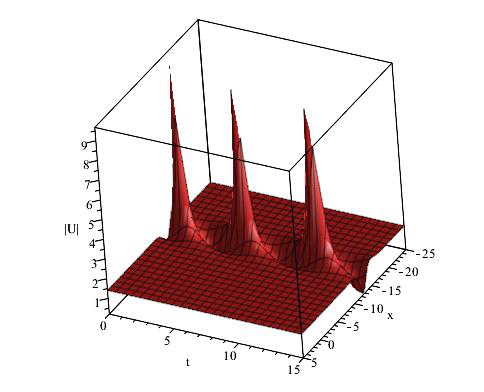
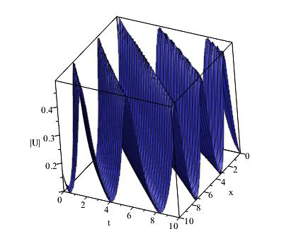
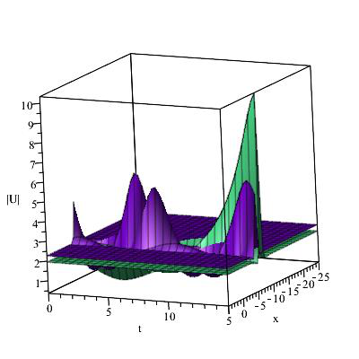
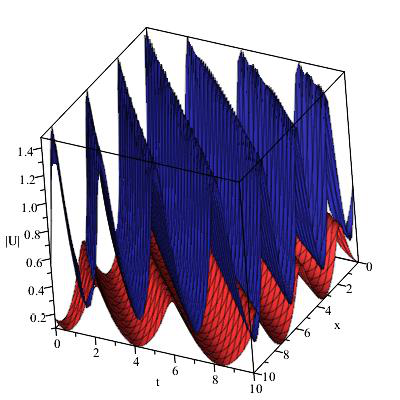
Figures 5–6 · Obliqueness, in 2D where it can actually be read
The 3D surfaces look impressive; the 2D cuts are what carry the argument. These two are the figures to point at if asked "what did you actually find?"
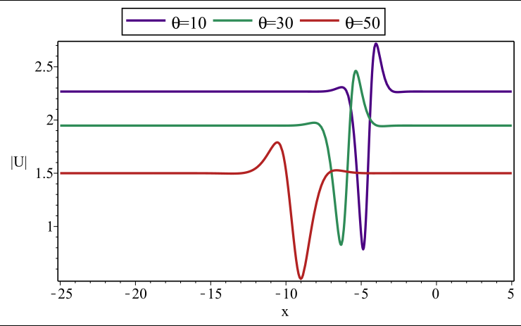
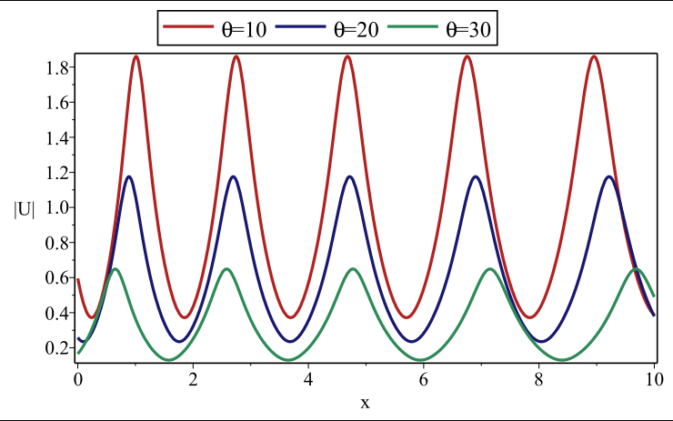
Say this about obliqueness
"As the oblique angle increases the wave broadens and its amplitude drops. You can see it directly in Figure 6 — the peak falls from about 1.85 at ten degrees to 0.65 at thirty. It comes out of the transformation: θ enters only through l = cos θ and m = sin θ, and those feed the constant B₁, which is the overall amplitude, and ω, which sets the scale of ξ."
Figures 7–9 · The fractional order
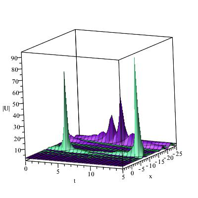
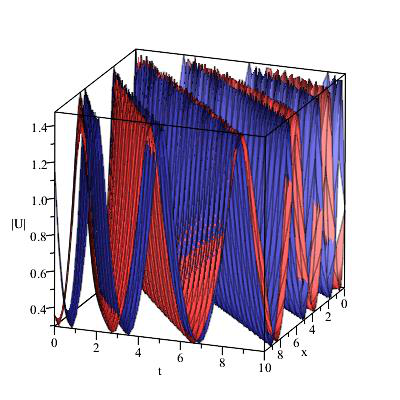
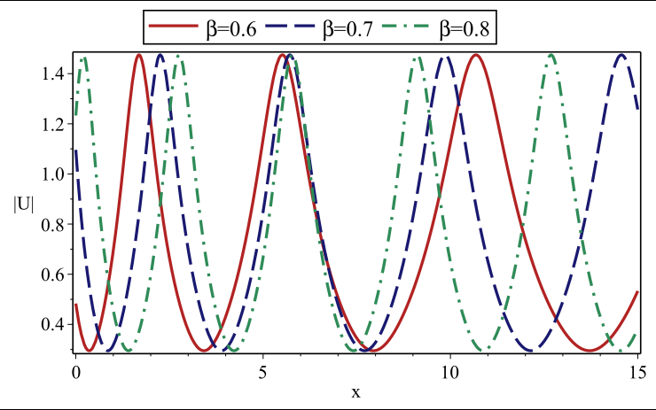
Why β does exactly this, and nothing else
Because β lives only inside ξ. Look at Eq. (12): β appears in the definition of the travelling coordinate and nowhere else — it never reaches B₁, which sets the amplitude. So changing β can only rescale the horizontal axis; it is mathematically incapable of changing the peak height. Figure 9 is that fact made visible. If you say this in an interview you have demonstrated that you understand the structure of your own solution rather than just describing a picture.
The report words it as "increasing the beta parameter fractionally results in a decrease in wave width while the amplitude remains constant … decreasing wave width ultimately leads to the increase of frequency". The amplitude half is exactly right and is the important half.
Figures 10–11 · Time
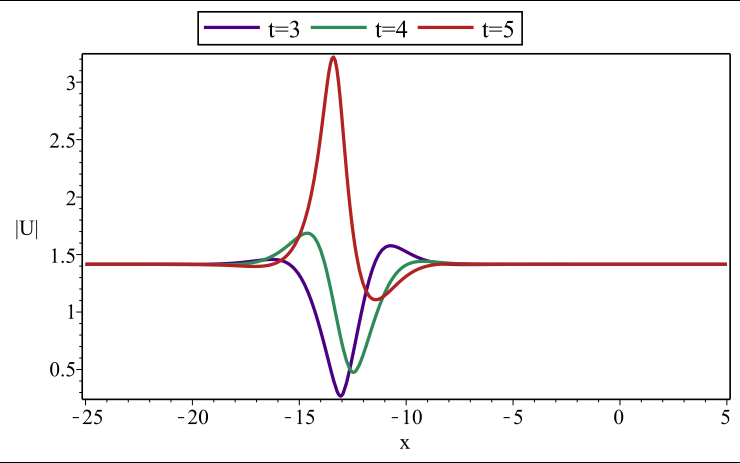
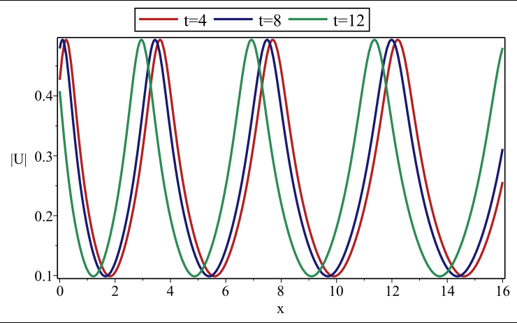
Independently reproduced — and where reproduction stops
Implementing Eqs. (19) and (20) directly in Python reproduces every amplitude in the report:
| Quantity | Computed | Report |
|---|---|---|
| Fig. 5 / 10 plateau |B₁|√5 at θ = 10°, 30°, 50°, 60° | 2.267, 1.948, 1.500, 1.415 | 2.28, 1.96, 1.51, ≈1.44 |
| Fig. 6 peak |U| at θ = 10°, 20°, 30° | 1.861, 1.175, 0.649 | ≈1.85, 1.17, 0.65 |
| Fig. 11 |U| range, θ = 60°, β = 0.8 | 0.0987 – 0.4937 | axis 0.10 – 0.49 |
Every one of those is independent of ω, so together they confirm B₁ and the structure of the solutions. What cannot be reproduced is the position of features along x — that depends on ω, on the value of y, and on whether the transformation used Γ(β) or √β, and the report pins down none of the three. That is a reproducibility gap in the report rather than a failure of the formulas, and it is a fair thing to say so.
You can run all of this live on page 11.
The parameter story, in one table
| Parameter | Enters through | Effect on the wave | Evidence |
|---|---|---|---|
| θ (obliqueness) | l = cos θ, m = sin θ → B₁ and ω | Amplitude falls, width grows | Figs. 3–6 |
| β (fractional order) | ξ only, via Eq. (12) | Rescales horizontally; amplitude unchanged | Figs. 7–9 |
| χ (auxiliary) | Selects Eq. (10) or (11) | χ < 0 → hyperbolic kink, bounded by |B₁|√−χ; χ > 0 → bounded periodic | Fig. 1 vs Fig. 2 |
| t (time) | ξ, with speed ω | Rigid translation of the profile | Figs. 10–11 |
| P, S | Eqs. (10)–(11) denominators | Set the shape; on the χ > 0 branch S > P would create real poles | Held fixed throughout |
| R | ξ + R | Pure shift along ξ | Held fixed at 3 |
What the figures do not say
Know these before you are asked
- The value of y is never stated. Every figure is drawn over x and t, so y must have been fixed at some value — the report does not say which. In an interview: "y is held constant in all the plots; the report does not record the value, and it should."
- P and S are never varied. They are fixed at 3 and 2 in all eleven figures, yet they are what decides whether the χ < 0 branch has poles. With S > P the picture would change qualitatively. That is the most interesting experiment the report did not run — and a genuinely good answer to "what would you do differently?"
- No verification figure. Nothing checks that (19) and (20) actually satisfy Eq. (1) — no residual plot, no substitution check. That is straightforward to fix, and page 11 does it symbolically with SymPy.
- Nothing about stability. The figures show that solutions exist and what they look like. They say nothing about whether a small perturbation would grow.